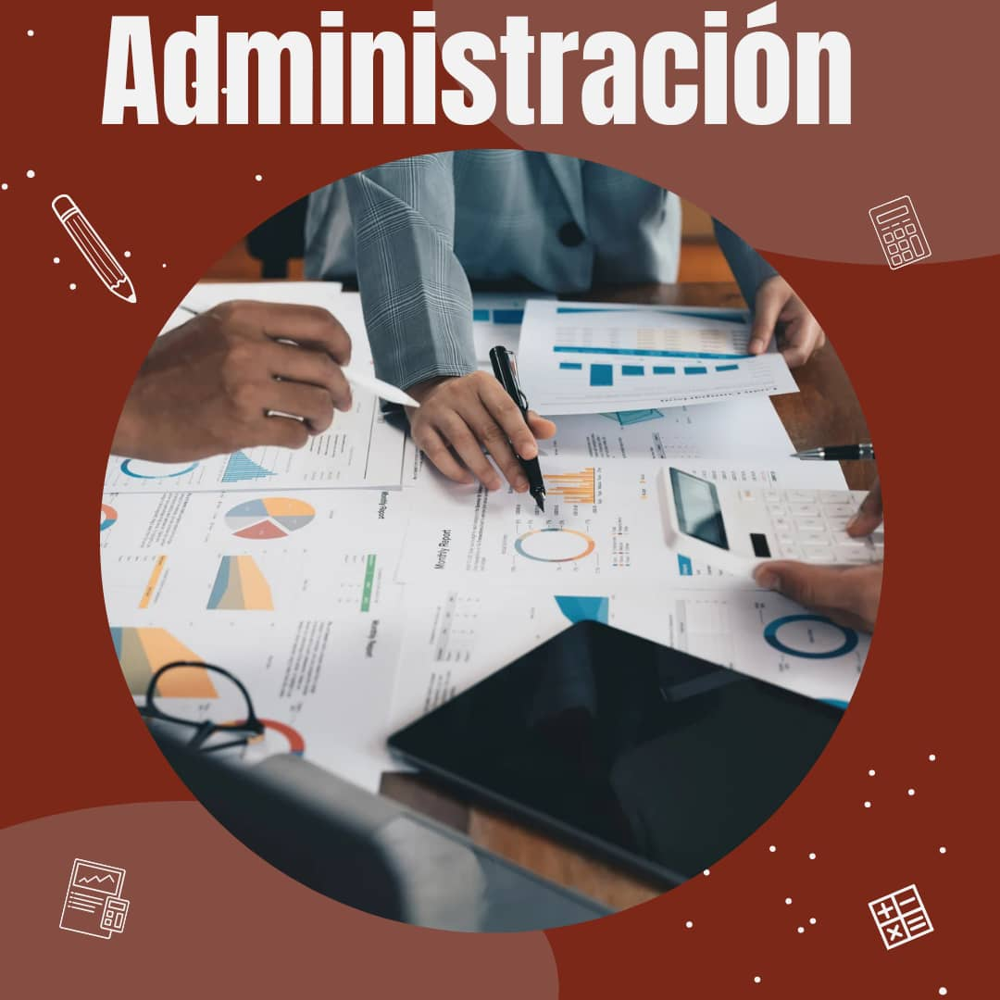
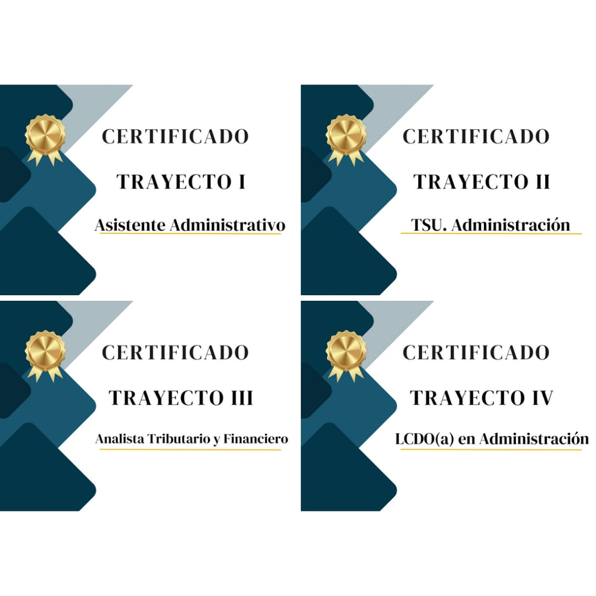
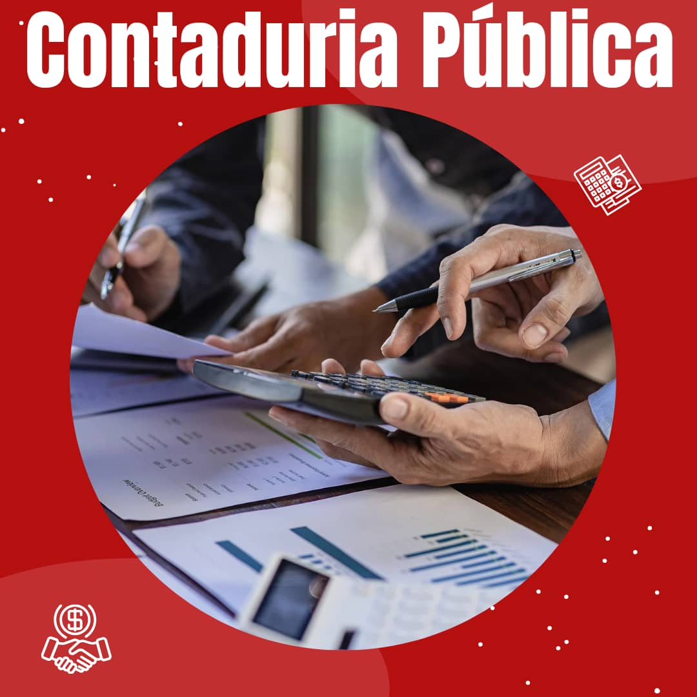
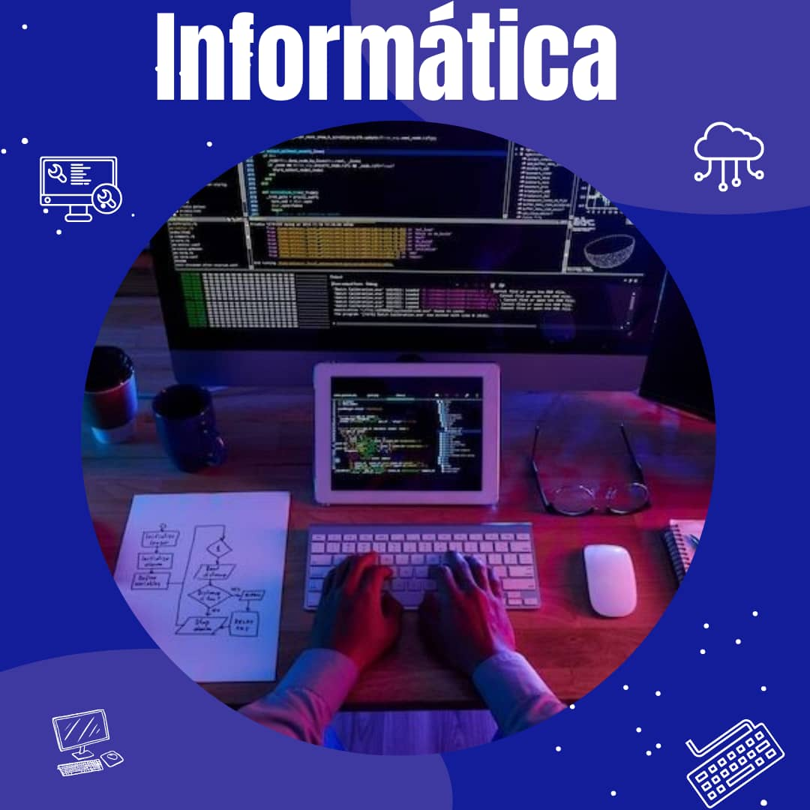

-
Administración de Empresas

Que es la administración
La administración es el proceso de planificar, organizar, dirigir y controlar los recursos (humanos, financieros, materiales, etc.)
de una organización para lograr sus objetivos de manera eficiente y efectiva.
Es una disciplina fundamental para el funcionamiento de cualquier tipo de organización,
desde pequeñas empresas hasta grandes corporaciones, incluyendo entidades sin fines de lucro y gubernamentales.
Abarca una variedad de funciones, como la toma de decisiones, la asignación de recursos, la dirección de equipos y la implementación de estrategias.
beneficios que tendras al estudiar administración
La carrera de Administración, te ofrece la posibilidad de desarrollar tus capacidades creativas
para resolver problemas organizacionales, optimizar procesos, innovar y mucho más .
Por lo que si decides estudiar esta profesión, ten por seguro que tus habilidades
creativas se desarrollarán enormemente.
Certificados que obtendras por cada trayecto

-
ingeniero en agroalimentacion
Que es la agroalimentación
Un ingeniero en agroalimentación es un profesional que aplica conocimientos de ingeniería,
encias agrícolas y alimentarias para optimizar los procesos de producción,
transformación y distribución de alimentos. En pocas palabras,
se encarga de que los alimentos que consumimos lleguen a nuestra mesa de manera segura,
eficiente y de alta calidad.
beneficios que obtendras Agroalimentación
Esta carrera brinda múltiples oportunidades laborales en empresas agroindustriales
nacionales e internacionales ; en áreas de gerencia agrícola y de planta, gestión de calidad,
gestión de la sostenibilidad, exportaciones, investigación y desarrollo,
operaciones y desarrollo de nuevos agronegocios.
certificados que obtienes al culminar cada trayecto
-
Contaduria Publica

Que es la Contaduria
Un licenciado en contabilidad es un profesional altamente capacitado en el registro,
análisis e interpretación de la información financiera de una empresa u organización.
Su rol es fundamental para la toma de decisiones estratégicas y
el cumplimiento de las obligaciones legales.
beneficios que tendrasal estudiar Contaduria
La contabilidad representa una de las carreras o profesiones
con mayor importancia en los sectores empresariales,
ya que es una base fundamental para que muchas empresas tomen decisiones
financieras inteligentes. Esto pudiese ser una de las razones del porqué estudiar
contaduría pública se hace ten crucial hoy en día.
los certificados que obtienes al culminar cada trayecto
-
lincenciado en deporte
Que es Deporte
Es un profesional que administra programas educativos y medios de preparación,
orientados al desarrollo de la motricidad humana,
mediante la aplicación de competencias psicopedagógicas,
socio humanísticas y biomédicas.
beneficios de estudiar Deporte
El estudio del Deporte y la Actividad Física no solo beneficia tu salud personal,
sino que también te capacita para promover el bienestar en los demás a través
de los conocimientos que irás adquiriendo a lo largo de la formación
los certificadosque obtienes al terminar cada trayecto
-
ingeniero en informatica

Que es Deporte
La ingeniería informática es la disciplina que se encarga del diseño,
desarrollo, implementación y mantenimiento de sistemas informáticos.
Esto abarca desde el hardware (los componentes físicos de un computador)
hasta el software (los programas que hacen que las computadoras funcionen).
beneficios de estudiar informática
La informática te proporcionan nuevas aptitudes para innovar y crear,
te brindan soluciones de software de calidad, conocimientos que te permitirán
mejorar el ambiente laboral, la comunicación entre los miembros de un equipo
de trabajo y ser más fuertes ante la competencia.
los certificados que obtienes al terminar cada trayecto